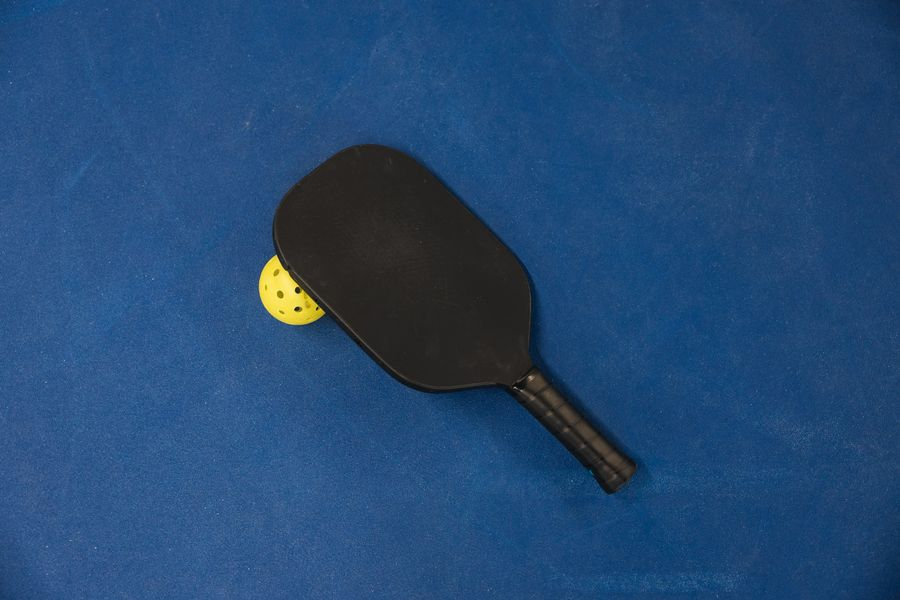
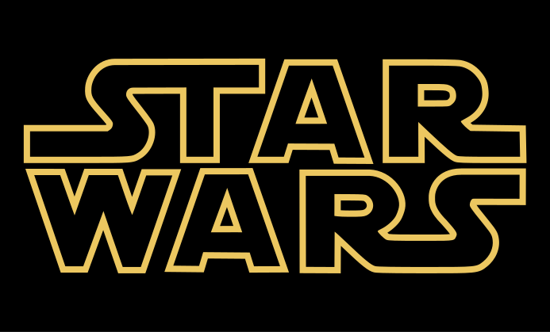

About me
A little about me
Hey, I'm Aadit, a Computer Engineering student at Georgia Tech who's interested in software engineering. In my free time, you'll find me reading the news, watching a movie (especially Star Wars, my favorite movie series), playing pickleball, and more!
My projects range from AI-assisted applications and backend systems to interactive tools. ComLab explores automated feedback triaging and summarization. Ranking Engine focuses on low-latency pairwise voting, while PictureBook combines an interactive editor with AI image generation. My Logic Gate Simulator and Physics Engine make technical ideas something you can experiment with.
For my ECE Discovery Project, I'm planning an ESP32 smart clock that combines an embedded device with a web interface. It brings my interest in software into a physical system: an OLED screen, sensors, an audible alarm, a flashing LED, and settings that can be controlled through a browser.
Outside of engineering
Reading the news, watching Star Wars, my favorite movie series, and playing pickleball.


Education & coursework
Georgia Institute of Technology
Bachelor of Science in Computer Engineering
Atlanta, Georgia
Expected graduation: May 2029
CS 1332: Data Structures & Algorithms
Data structures, algorithms, and their performance in the context of object-oriented programming.
ECE 2020: Fundamentals of Digital Design
Digital logic, Boolean algebra, and the building blocks of digital systems.
MATH 1554: Linear Algebra
Vectors, matrices, linear systems, and transformations.
MATH 2551: Multivariable Calculus
Calculus for functions of several variables, including derivatives and multiple integrals.
Career goals
My goal is to become a software engineer and build useful, reliable applications. At Georgia Tech, I want to strengthen my foundation in programming and computer systems, keep developing projects like ComLab and my ESP32 smart clock, and gain experience through internships and collaborative work. These experiences will help me find the areas of software engineering I enjoy most and prepare for a full-time role after graduating in May 2029.